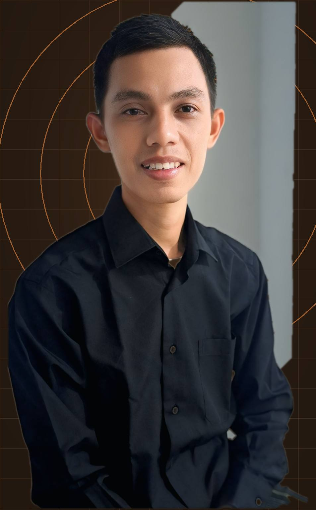

Virtual Infrastructure
VM operations, virtualization support, datastore troubleshooting, backup checks and operational troubleshooting.
Hi, I'm
IT professional with 10+ years of experience across infrastructure, network support, monitoring, incident management and virtualization. Currently focused on virtual infrastructure operations, troubleshooting and service stability.

I am an IT professional with 10+ years of experience across infrastructure, endpoint support, networking, monitoring and incident management. My career has evolved from hands-on IT support into infrastructure monitoring, L2 incident handling and virtual infrastructure operations.
Currently working as a Cloud Engineer, I handle virtual machine operations, network routing, VPN, backup, datastore monitoring and infrastructure troubleshooting across enterprise environments.
I work best on problems that require structured investigation, clear documentation, fast incident response and collaboration with users, SMEs and cross-functional teams.
VM operations, virtualization support, datastore troubleshooting, backup checks and operational troubleshooting.
Infrastructure and application monitoring, anomaly tracking, reporting, escalation and incident communication.
Network routing, VPN troubleshooting, firewall checks, access management and connectivity investigation.
Portfolio deployment workflow using GitHub repositories, commits and Cloudflare Workers deployment.
Incident response, structured troubleshooting, escalation, endpoint support and operational documentation.
Virtual Infrastructure · Monitoring · Incident Management · Network Troubleshooting · Cloud Operations · Deployment
Telkom Indonesia · Project PDNS / PT Infomedia Solusi Humanika
PT. Akhdani Reka Solusi · Bank Syariah Indonesia
Allo Bank
PT Bank Syariah Indonesia Tbk.
PT Indah Subur Sejati
Infrastructure support for OS upgrade and replacement activities in a banking environment, including preparation, deployment coordination, troubleshooting and post-change validation.
Maintain service continuity during infrastructure changes.
Coordinate change activities, validate systems and troubleshoot issues.
Operations · Troubleshooting · Change Support
Network connectivity support involving routing, firewall access and troubleshooting across enterprise environments.
Supported disaster recovery and switchover activities with focus on operational readiness, validation and incident handling.
Supported ATM deployment and maintenance activities, including field troubleshooting and infrastructure coordination.
Daily virtual infrastructure operations covering VM troubleshooting, vCenter management, datastore checks and backup/restore requests.
Monitoring and incident workflow using observability tools, structured escalation, documentation and cross-team coordination.
Bachelor's Degree · Information Technology
Open to opportunities and conversations around cloud, infrastructure, monitoring, incident operations and technical support.